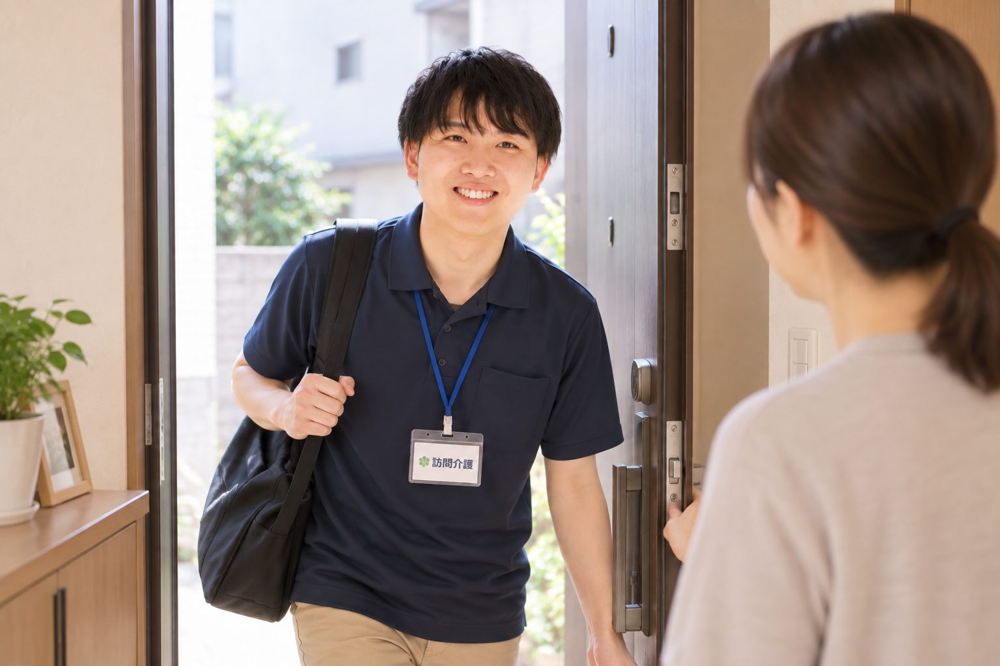

WORK仕事内容
ご利用者様のご自宅を訪問し、身体介護・生活援助・外出の支援などを行います。基本は自宅から訪問先への直行直帰。移動・待機の時間も勤務時間です。
- 居宅介護
- 行動援護・移動支援
- 同行援護
- 重度訪問介護
POINT訪問介護のここが違う
最初から、一人にしない
先輩スタッフへの同行期間は約3ヶ月。OJTとして1年間、教育担当がつきます。
希望休が取りやすい
シフトは本人の希望がベース。希望休の取得率は100%、週3〜4勤務の短時間勤務も大歓迎です。
費用ゼロで資格取得
お休みの日に研修に参加するとバイト代を支給。働きながら費用ゼロで資格を取れます。
残業代は1分単位
固定残業代はなし。残業代は1分単位で支給します。
SALARY給与
- 基本給
- 185,000〜355,000円
- 基本手当
- 10,000〜25,000円
- 職能手当
- 6,000〜255,000円
- 精勤手当
- 10,000円
- 業務手当
- 25,000〜36,000円
- 会議手当
- 10,000円
- 移動手当
- 21,000円〜
- 通信手当
- 500円
- 資格手当
- 1,000〜20,000円
- 基本給
- 148,000円
- 基本手当
- 8,000円
- 職能手当
- 4,800円
- 精勤手当
- 8,000円
- 業務手当
- 20,000円〜
- 会議手当
- 8,000円
- 移動手当
- 21,000円〜
- 通信手当
- 500円
- 資格手当
- 800〜16,000円
- 基本給
- 111,000円
- ＋各種手当
- —
資格・経験による。週1日・1日1時間〜応相談
※金額は応相談。家族手当5,000円/人（子18歳未満）。早朝・深夜は割増。試用期間6か月（期間中も給与・待遇の変更なし）。
キャリアアップモデル
DAILY SCHEDULE1日の流れ（例）
サービスは24時間365日。自宅から直行・直帰で、移動・待機の時間も勤務時間です。
出勤・利用者様宅へ訪問
自宅から訪問先へ直行します。事務所に寄る必要はありません。
移動・待機（〜13:00）
移動や待機の時間も勤務時間としてカウントされます。この間に記録をつけたり、休憩にあてたりします。
外出支援（〜14:30）
社用車で買い物や余暇活動などに同行し、利用者様の「行ってみたい」を一緒に叶えます。
移動（〜15:00）
休憩（〜16:00）
訪問支援（〜17:00）
利用者様のご自宅で、その方に合わせた支援を行います。
移動（〜18:00）
訪問支援（〜19:30）
入浴介助など、夕方から夜にかけての生活支援を行います。
終了・そのまま帰宅
訪問先から直帰。事務所に戻らずに1日を終えられます。
BENEFITS福利厚生・手当
社会保険
厚生年金／雇用保険／労災保険／健康保険／はぐくみ基金／家賃助成／奨学金補助
資格手当
介護福祉士 5,000円／実務者研修 4,000円／初任者研修 2,000円／行動援護・同行援護 各1,000円
※社内で無料取得可能
交通・移動
通勤交通費 実費相当／移動手当21,000円〜／バイク・マイカー通勤OK
その他
家族手当5,000円/人／退職金制度（2年以上）／副業・Wワーク可／入社時住宅補助／リフレッシュ休暇（誕生月）／産前産後・育児休暇
REQUIREMENTS募集要項
| 職種 | 訪問介護スタッフ（ヘルパー） |
|---|---|
| 雇用形態 | フルタイム（40時間・契約社員でスタートし、6か月後に管理者面談のうえ正社員）・短時間社員（32時間／28時間・契約社員）・登録ヘルパー（パート）未経験・無資格の方はパート・アルバイトからスタート。資格取得後または6ヶ月勤務後に社員へ。 |
| 給与 | 【フルタイム（40時間）】月給273,500円〜737,500円 【短時間社員（32時間）】月給218,900円〜 【短時間社員（28時間）】月給164,300円〜金額応相談。試用期間6か月（給与・待遇の変更なし） |
| 賞与・昇給 | 賞与 年2回（昨年実績2〜3ヶ月分） 昇給 毎年4月（資格取得・頑張りに応じて随時昇給あり） |
| 勤務時間 | シフト制・1か月単位の変形労働時間制（実働8時間／月平均173時間）短時間社員は週32時間・28時間（9:00〜18:00のシフト制） |
| 休日・休暇 | 年間108日〜（有給含む）。シフトは本人希望ベース。 年次有給休暇／慶弔休暇／産前産後休暇／育児・介護休業 |
| 勤務地 | 大和市・町田市・相模原市・海老名エリア（基本的に直行直帰）事務所：東京都町田市金森3-23-1 2F（最寄：成瀬駅） |
| 応募資格 | 未経験・無資格可（資格取得サポートあり）。運転免許（原付可）があれば、パート・アルバイトからスタートできます。資格取得後または6ヶ月勤務後に社員へ。 |